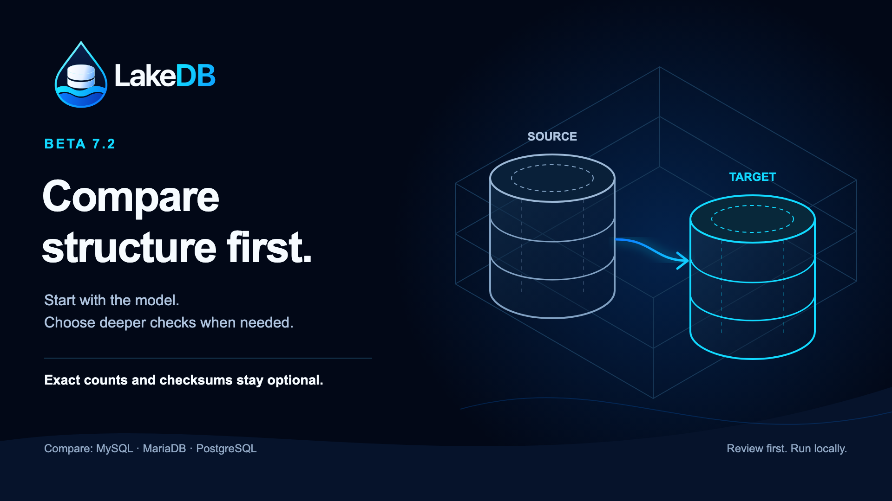

Your explorer follows your SQL
Successfully create, alter, rename or drop an object and the explorer refreshes. If a later statement in the same script fails, the earlier successful change still appears.
Automatic metadata refreshExplore, query and edit across four engines. Compare structures, review the plan and choose how to move your data.
Free local SQL client macOS, Windows & Linux

01 / What’s new in Beta 7.2
This update focuses on everyday database work: what changed, what was checked and what a migration will do.
Successfully create, alter, rename or drop an object and the explorer refreshes. If a later statement in the same script fails, the earlier successful change still appears.
Automatic metadata refreshTable analysis starts with model comparison. Exact row counts and content checks are separate choices, so opening a comparison does not select a full data scan.
Data checks are opt-inResults distinguish equivalent structures, matching counts, checksums and partitions. A count match is no longer presented as proof that the data is identical.
Specific comparison resultsMerge and Replace data explain their effects before copying. Local foreign keys compare correctly across differently named schemas, and permissions keep your chosen scope.
Clearer migration & access review02 / Compare & migrate
A model check, a data check and a migration answer different questions. LakeDB keeps those choices visible.
Select source, target and objects. Begin with model comparison; enable data checks only when they answer your question.
Review structures, object definitions and the checks you requested. Export the generated SQL or prepare a migration plan.
Check the target, dependencies and copy options before executing through your own local database connection.
| Check | What it tells you | Database work |
|---|---|---|
| Model Default | Whether the selected structures and definitions match. | Metadata inspection; no row-content comparison. |
| Exact row counts | Whether selected tables contain the same number of rows. | Can scan table indexes. Matching counts do not prove matching values. |
| Content / checksums | Whether the selected content checksums match. | Reads table data and can be expensive on large tables. |
Reads all source rows and inserts or updates target rows. It is a complete source pass, rather than a row-by-row difference download.
Deletes target rows before copying the source. Dependent tables may be required. Review the plan and the target before execution.
On a busy production database, start with model comparison and a small scope. Choose exact counts, content checks and data copies deliberately; their work grows with the selected tables. DDL rollback depends on the engine.
03 / Your everyday SQL client
SQL tabs, table tabs, selected schema and layout belong to their connection. Move between local, staging and production without mixing workspaces.
Schema-aware completion, local syntax diagnostics, formatting, Explain, history and customizable shortcuts.
Typed staged edits, stable row identities, conflict checks, transactions and streaming exports.
Direct, SSH and TLS routes for server engines. Local SQLite files, read-only connections and production confirmations.
Native behavior, explicit capabilities
MySQL & MariaDBServer catalogs, access management, backup, restore, comparison and migration.
PostgreSQLNative schemas, types and plans, access management, schema backup/restore and transactional table copy.
SQLiteLocal file connections, SQL, browsing, table editing and exports. Unsupported transfer tools stay disabled.
04 / Optional QuerIA
QuerIA sits beside your SQL tabs. Draft a focused query with Normal generation, or inspect relationships and indexes with Agentic generation. The complete SQL stays visible before you run it.
Review the privacy notice and activate the optional service explicitly. You can disable it again.
Database credentials, table rows and query results are never sent to the AI service.
Requests use your question, chosen context and relevant schema metadata. LakeDB Service does not retain those inputs or generated SQL.
The complete local SQL client is free to use. Optional Patreon membership supports development and provides higher QuerIA usage limits.
05 / Road to 1.0
Beta 7.2 builds on four native engines with clearer comparison, migration and access workflows. The next step is measured quality, compatibility and trusted distribution.
06 / Download Beta 7.2
Choose the package for your computer. All downloads come from the official GitHub release.
Apple Silicon · arm64
Download DMG ZIP archiveDeveloper ID signed
and notarized by Apple.
64-bit · x64
Download installer Portable EXEBeta packages are unsigned.
A SmartScreen prompt may appear.
64-bit · x64
Download AppImage Debian packageAppImage or .deb.
Matching SHA-256 files included.
Install the official cask on macOS Apple Silicon.
brew tap DavLagoHern/lakedb
brew trust DavLagoHern/lakedb
brew install --cask lakedbInstalling an update does not migrate your connected databases. Connections, preferences and workspaces remain in the local profile. Database changes only run when you explicitly execute SQL, apply edits or start an operation.
No. LakeDB exposes engine capabilities explicitly. MySQL/MariaDB and PostgreSQL have different transfer and catalog behavior; unsupported tools remain disabled for SQLite. See the documentation for each engine.
Use the bug report form with your LakeDB version, operating system, engine version and steps to reproduce. Review diagnostics before sharing and remove sensitive data.
Independent development
Share a real workflow, report a reproducible bug or support continued development.